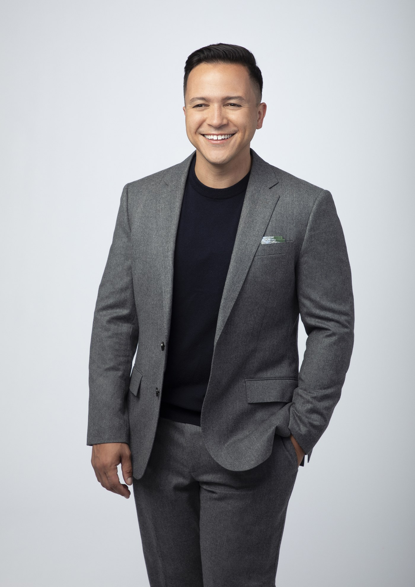
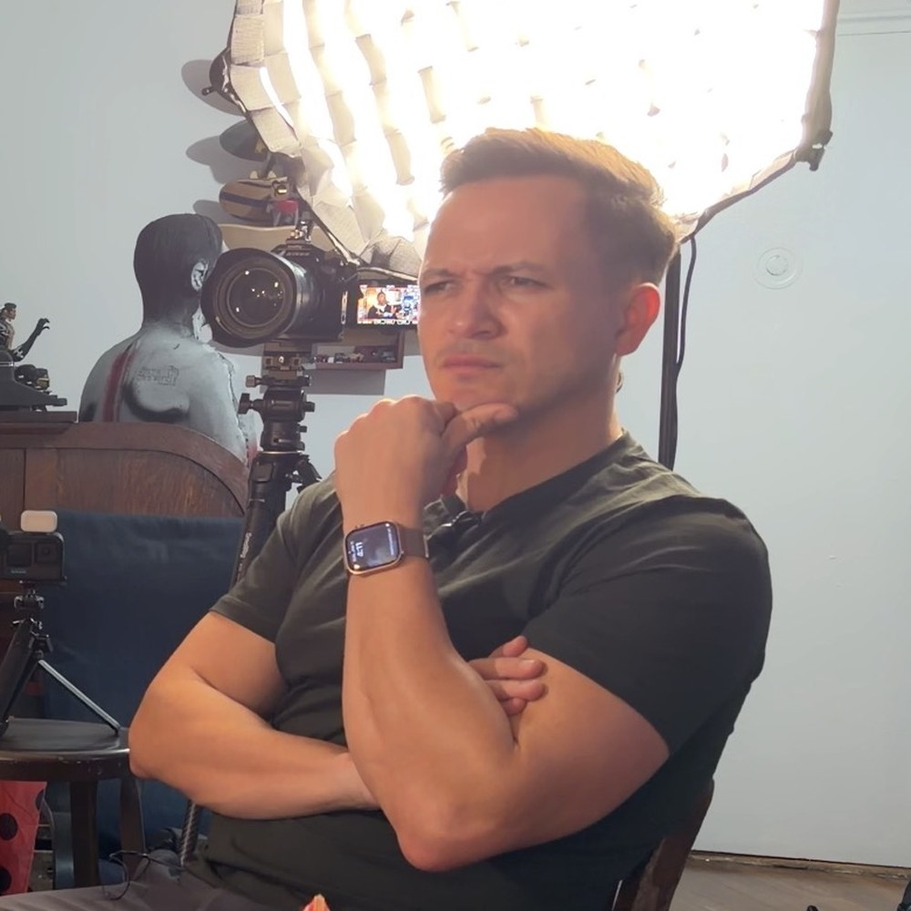
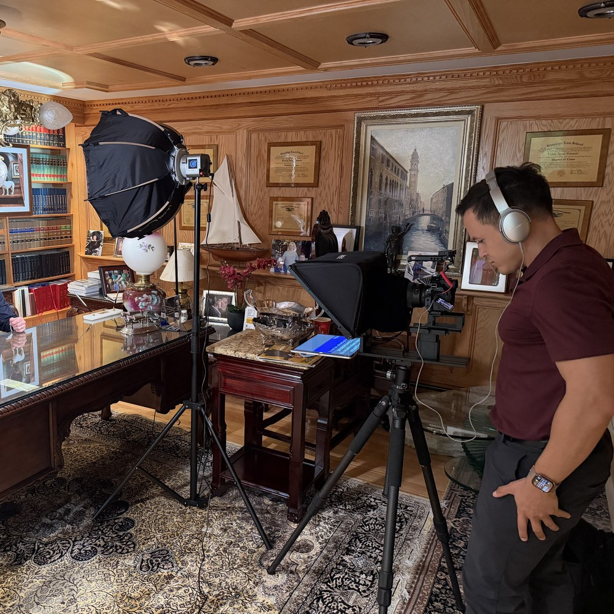
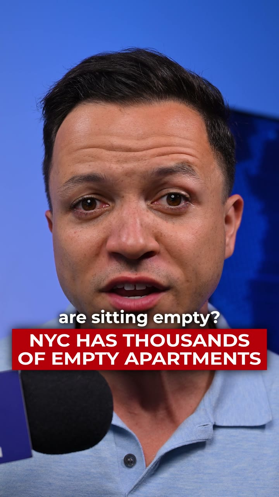

The Virtual Intensive
Built for global executives needing rapid, high-impact on-camera coaching, message mapping, and mock interview critiques via our secure virtual studio.
On-Camera Coach & Producer · New York City
Waller Media pairs Emmy-winning on-camera coaching with premium video production — one partner, one process, from first rehearsal to final cut.
Trusted by law firms, executives and nonprofits.

Derick Waller
Founder · On-Camera Coach & Producer


Founder · On-Camera Coach & Producer
Derick Waller is a five-time Emmy Award-winning broadcast journalist based in New York City. He has spent his career in front of the camera — reporting live, on deadline, in rooms where there are no second takes and no do-overs.
That instinct is the foundation of Waller Media. Derick doesn't teach media-training theory from a slide deck — he coaches from inside the same discipline that news directors, producers, and camera crews have sharpened in him over years of live broadcast work.
Waller Media exists because Derick kept seeing the same gap: executives and attorneys with important things to say who froze, rambled, or looked stiff the moment a camera turned on. Media trainers could fix the delivery. Production companies could make it look expensive. Almost no one could do both — at a level worthy of a five-time Emmy winner.
So he built the category himself: on-camera coach and producer. One relationship. One process. A finished, publishable piece of thought-leadership video — and a client who now knows exactly how to own the room, the deposition, or the lens, every time.
“You don't need a media trainer. And you don't need a video crew. You need both — from someone who's lived on both sides of the camera.” — Derick Waller
How We Work Together
Most people hire a media trainer, then hire a separate production company, then hope the two visions match. Waller Media replaces that broken process with one category-defining engagement — on-camera coaching and premium video production, from a single Emmy-winning expert.
Because every executive, spokesperson, and founder faces unique media challenges, our engagements are customized to your specific goals. Whether you're prepping for a high-stakes press circuit or building a premium thought-leadership engine, we scale to your needs.
Built for global executives needing rapid, high-impact on-camera coaching, message mapping, and mock interview critiques via our secure virtual studio.
A full-day, in-person media training intensive. We bring a professional closed-door broadcast set to you for real-time video critique and performance shaping.
Signature
Our full differentiator, in one engagement: deep media training combined with a premium, multi-camera production shoot — coached and produced by the same person, start to finish. Not a trainer. Not a crew. Both.
Corporate & Executive Investments Start at $2,500
Every engagement begins with a consultation to scope your goals, timeline, and deliverables.
Schedule Your ConsultationWhy It Matters
Viewers decide whether to trust someone on camera within seconds — long before they've processed a single word of what's actually said. Posture, pacing, and eye contact do the persuading before your message ever gets the chance.
In the clip economy, a single awkward soundbite from a deposition, interview, or panel can follow a firm or an executive for years. Preparation is cheaper than damage control, every time.
Prospective clients now make hiring decisions off a ninety-second video before they ever pick up the phone. Executives and attorneys who look like the authority they are win that decision before the first call.
Nationally, executive media training ranges from a few hundred dollars for a group webinar to well over $10,000 for multi-day intensives with major firms. Waller Media sits deliberately at the premium end of that range — because you're not just leaving with sharper delivery, you're leaving with a produced, publishable piece of video content from the same engagement. Corporate and executive investments start at $2,500, scoped to your goals during a consultation.
Selected Work
A sample of Derick's own on-camera work. Law firm and executive client case studies are available on request during your consultation.
Vertical / Social
Fast-turn vertical reporting — the same on-camera command applied to short-form social video.

Vertical / Social
Original reporting built for how audiences actually watch news today: vertical, fast, mobile-first.
Start Here
Tell us a bit about what you need — coaching, production, or both — and we'll follow up to schedule your consultation.